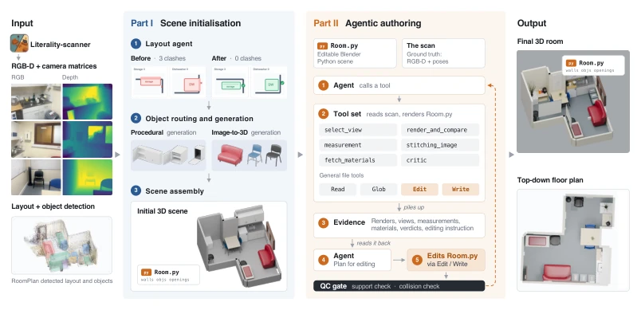
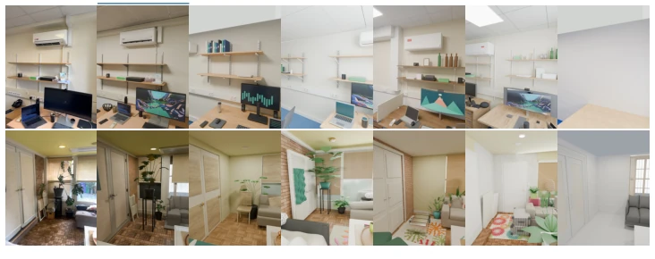
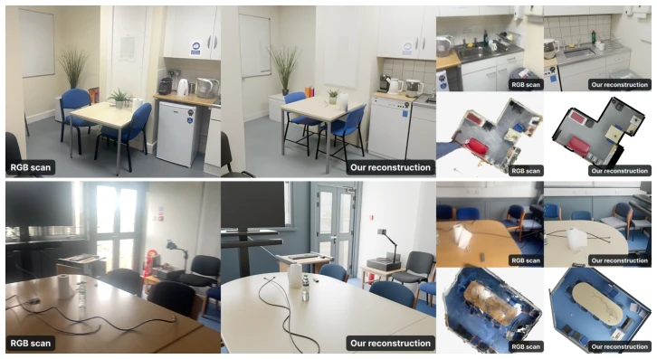
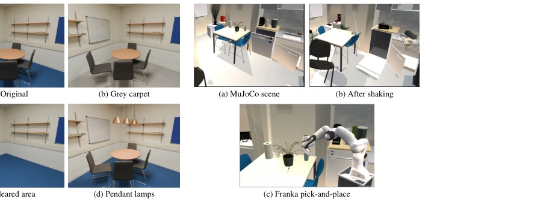
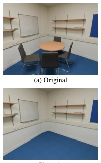

LiteReality-Agent: An Agentic System for Interactable 3D Indoor Scene Reconstruction
Zhening Huang, Yueyan Li, Johnathan Chiu, Xiaoyang Lyu, Matt Zhou, Yuxin Yao abspdf
论文点评Review
LiteReality-Agent 把 3D 重建从“玄学”变成了“写代码”，这招确实高明。它不再依赖黑盒生成，而是让 Agent 像个严谨的程序员一样，通过编辑 Room.py 来“手搓”场景。这种将重建转化为编程任务的思路，让场景变得可解释、可编辑，甚至能直接导出到 MuJoCo 做仿真，简直是具身智能的“数字孪生”福音。不过，这系统对 Agent 的推理能力和工具链的鲁棒性要求极高，一旦 Agent 在“观察-编辑-验证”循环里卡壳，或者工具调用失败，整个流程可能就会崩盘。而且，它目前主要依赖 RGB-D 扫描，对于没有深度信息的纯图像重建能力如何，还是个未知数。总的来说，这是个把“生成”变成“构建”的务实尝试，但离真正的“全自动”还有距离，毕竟让 AI 写代码比让它画图难多了。
LiteReality-Agent transforms 3D reconstruction from \"metaphysics\" to \"coding\", which is indeed an ingenious move. It no longer relies on black-box generation, but instead allows the Agent to act like a rigorous programmer, \"hand-crafting\" the scene by editing Room.py. This approach of transforming reconstruction into a programming task makes the scene interpretable and editable, and even enables direct export to MuJoCo for simulation, which is simply a \"digital twin\" gospel for embodied AI. However, this system has extremely high requirements for the Agent's reasoning ability and toolchain robustness; once the Agent gets stuck in the \"observe-edit-verify\" loop or a tool call fails, the entire process may collapse. Moreover, it currently mainly relies on RGB-D scanning, and how its capability is for pure image reconstruction without depth information remains unknown. Overall, this is a pragmatic attempt to turn \"generation\" into \"construction\", but it is still far from true \"full automation\", after all, making AI write code is much harder than making it draw pictures.
研究动机Motivation
构建功能完备、可直接用于物理仿真的数字孪生（Digital Twin）一直是逆图形学领域的圣杯，对于机器人仿真、制造和 VR 至关重要。现有的方法大多存在明显短板：基于点云或传统网格的方法（如 Campos et al., 2021; Wang et al., 2025; Murez et al., 2020）难以恢复物体的关节结构和物理属性，无法直接用于交互；基于 CAD 检索的方法（Avetisyan et al., 2019; Kuo et al., 2020）依赖预定义资产库，泛化性差；而基于生成式模型的方法（Yao et al., 2025; Yan et al., 2023）往往缺乏物理一致性，生成的物体可能“悬浮”或相互穿插。虽然 LiteReality (Huang et al., 2025b) 迈出了一步，但其确定性流水线难以处理复杂或超出预设场景的情况。尽管近期出现了利用 LLM 进行场景生成的工作（如 Holodeck, SceneCraft, SceneSmith），以及像 Astra 和 Fable 这样的通用 Agent，但它们缺乏一个能将真实观测与 Agent 输出紧密结合、并具备严格质量验证的编排框架。LiteReality-Agent 旨在填补这一空白，解决从真实扫描到高质量、可交互、物理可信的仿真场景的转化难题。
Building fully functional digital twins (Digital Twin) that can be directly used for physics simulation has always been the holy grail of the inverse graphics field, which is crucial for robot simulation, manufacturing, and VR. Most existing methods have obvious shortcomings: methods based on point clouds or traditional meshes (such as Campos et al., 2021; Wang et al., 2025; Murez et al., 2020) struggle to recover object joint structures and physical properties, making them unsuitable for direct interaction; methods based on CAD retrieval (Avetisyan et al., 2019; Kuo et al., 2020) rely on predefined asset libraries and have poor generalization; while methods based on generative models (Yao et al., 2025; Yan et al., 2023) often lack physical consistency, where generated objects may \"float\" or intersect each other. Although LiteReality (Huang et al., 2025b) has taken a step, its deterministic pipeline struggles to handle complex or out-of-predefined-scenario situations. Although recent work utilizing LLMs for scene generation (such as Holodeck, SceneCraft, SceneSmith) has emerged, as well as general-purpose Agents like Astra and Fable, they lack an orchestration framework that tightly integrates real observations with Agent outputs and possesses strict quality verification. LiteReality-Agent aims to fill this gap, solving the conversion challenge from real scans to high-quality, interactive, and physically credible simulation scenes.
The core innovation of LiteReality-Agent lies in formalizing 3D reconstruction as a programming task, where the entire scene is defined by an executable Python script (Room.py). The system is divided into two stages: Scene Initialisation and Agent Authoring. The first stage (Scene Initialisation) utilizes RGB-D scanning and detection data, uses the Layout Agent to fix layout noise (such as collisions, support relationship errors), and generates an initial Room.py file, which contains geometric and physical properties of static or movable assets. The second stage (Agentic Authoring) is the core, adopting an \"observe-edit-verify\" (observe-edit-verify) loop framework. The Agent obtains evidence through a dedicated toolset (such as select_views, render_and_compare, measurement), compares rendered images with real photos, measures geometric dimensions, and modifies the Room.py code accordingly. This process includes strict Quality Control Gates, automatically checking collisions (collision) and support relationships (support), ensuring the scene is physically reasonable. In addition, the system supports procedural editing, such as adjusting layout or materials via natural language instructions. Finally, the scene can be exported in MuJoCo format, containing complete physical properties (mass, inertia, collision bodies, joints), achieving seamless integration from the real world to simulation.

Figure 2: End-to-end LiteReality-Agent pipeline. RGB–D scans and detections guide layout repair and object reconstruction to produce an executable initial room. The authoring agent refines Room.py through an observe–edit–verify loop, using capture views, measurements, materials, and rendered comparisons. Control gates bound authoring and check geometry and support. The editable scene and physical metadata support MuJoCo export.
The authors conducted evaluations on 10 real indoor scenes, comparing the LiteReality baseline against two general-purpose Agents: GPT-6 (Codex) and Fable 5.1 (Claude Code). Evaluation metrics cover visual fidelity (SSIM, PSNR, RMSE, LPIPS), geometric consistency (depth MAE, bottom contact rate, number of object intersection pairs), and human and Agent perception scores. Results show that LiteReality-Agent outperforms other methods on all visual metrics, with PSNR 1.162 dB higher than the strongest baseline GPT-6 (+Scan), and LPIPS reduced by 13.7%. In terms of geometry, it achieved a 100% bottom contact rate, and the number of object intersection pairs was 0, with depth MAE only 10.50 cm, significantly outperforming other methods. In human evaluation, it obtained the highest scores in layout, object similarity, and overall similarity (4.60, 4.58, 4.54). Ablation studies show that introducing RGB-D scanning data can significantly improve the performance of general-purpose Agents, but LiteReality-Agent's orchestration framework and verification mechanism are the key to achieving high-quality reconstruction.

Figure 3: Qualitative comparison with reconstruction baselines. Three representative scenes compare the RGB input and RGB–D scan with LiteReality-Agent, GPT-6 Astra and Fable 5.1 with and without scan input, and LiteReality. All reconstruction results are rendered from the same calibrated camera viewpoint.

Figure 4: Representative reconstruction comparisons. A kitchen (top) and meeting room (bot- tom), with captured RGB photographs, reconstructed views, and point-cloud/scene plan views.

Figure 6: Simulation and interaction. The re- constructed kitchen in MuJoCo, after shaking, and in a Franka pick-and-place example.

Figure 5: Scene editing. Programmatic edits to the reconstructed office: carpet recolouring, furniture removal, and pendant-light addition.